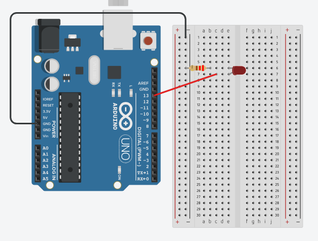
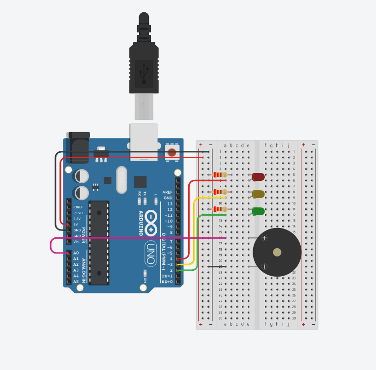

Keimo Asjade Internet ja robootika
Koduõppe nädal Servo 360 mootor kontroll nuppude abil
Tinkercad:

Tinkercad link
Kood:
#include <Servo.h> // Lisame Servo teegi, et saaks mootorit juhtida
const int BUTTON1_PIN = 6; // Nupp 1 (päripäeva)
const int BUTTON2_PIN = 7; // Nupp 2 (vastupäeva)
const int SERVO_PIN = 9; // Servo mootor on ühendatud pordiga 9
Servo servo;
int lastButton1State;
int lastButton2State;
int currentButton1State;
int currentButton2State;
void setup() {
Serial.begin(9600); // Serialühendus, et saaksime Serial Monitori kasutada
pinMode(BUTTON1_PIN, INPUT_PULLUP);
pinMode(BUTTON2_PIN, INPUT_PULLUP);
servo.attach(SERVO_PIN); // Ühendame servo pordiga
// Loeme esialgse nupuseisu
currentButton1State = digitalRead(BUTTON1_PIN);
currentButton2State = digitalRead(BUTTON2_PIN);
}
void loop() {
// Salvestame eelmise ja loeme uue nupu 1 seisu
lastButton1State = currentButton1State;
currentButton1State = digitalRead(BUTTON1_PIN);
// Salvestame eelmise ja loeme uue nupu 2 seisu
lastButton2State = currentButton2State;
currentButton2State = digitalRead(BUTTON2_PIN);
// Kui nupp 1 vajutatakse (päripäeva)
if (lastButton1State == HIGH && currentButton1State == LOW) {
Serial.println("Paripaeva 360 kraadi");
servo.write(0); // Täiskiirus päripäeva (0)
delay(1000); // Ootame umbes 1 sekund (360° pöörde aeg)
servo.write(90); // Peatame mootori
}
// Kui nupp 2 vajutatakse (vastupäeva)
if (lastButton2State == HIGH && currentButton2State == LOW) {
Serial.println("Vastupaeva 360 kraadi");
servo.write(180); // Vastupäeva (180)
delay(1000); // Ootame umbes 1 sekund (360° pöörde aeg)
servo.write(90); // Peatame mootori
}
}
Allikad:
Projekti alus: https://arduinogetstarted.com/tutorials/arduino-button-servo-motor
Koodi arengu autor: Keimo Plaas ™©
Keimo Plaas Ülesanded: 6, 5, 4, 16, 15, 14, 26, 25, 24
Saan läbi Serial Monitor konsooli lülitada valgust sisse-välja. - Ül 6

Tinkercad link
Kood:
int ledPin = 13;
String inputString = "";
void setup() {
pinMode(ledPin, OUTPUT);
Serial.begin(9600);
Serial.println("Sisesta 'on' voi 'off' ja vajuta Enter:");
}
void loop() {
if (Serial.available()) {
inputString = Serial.readStringUntil('\n');
inputString.trim();
if (inputString.equalsIgnoreCase("on")) {
digitalWrite(ledPin, HIGH);
Serial.println("LED on sisse lulitatud.");
}
else if (inputString.equalsIgnoreCase("off")) {
digitalWrite(ledPin, LOW);
Serial.println("LED on valja lulitatud.");
}
else {
Serial.println("Tundmatu kask. Kasuta 'on' voi 'off'.");
}
}
}
LED’id kuvavad helitugevust (1 led nõrk->3 led’i vali) - Ül 5

Tinkercad link
Kood:
int micPin = A0;
int led1 = 2;
int led2 = 3;
int led3 = 4;
void setup() {
pinMode(led1, OUTPUT);
pinMode(led2, OUTPUT);
pinMode(led3, OUTPUT);
Serial.begin(9600);
}
void loop() {
int micValue = analogRead(micPin);
Serial.println(micValue);
if (micValue < 200) {
digitalWrite(led1, HIGH);
digitalWrite(led2, LOW);
digitalWrite(led3, LOW);
} else if (micValue < 400) {
digitalWrite(led1, HIGH);
digitalWrite(led2, HIGH);
digitalWrite(led3, LOW);
} else {
digitalWrite(led1, HIGH);
digitalWrite(led2, HIGH);
digitalWrite(led3, HIGH);
}
delay(100);
}
Tuled süttivad, kui läheb pimedaks. Väljasta Serial Monitorile tekst, kas on pime või valge - Ül 4
Tinkercad link
Kood:
int ldrPin = A0;
int ledPin = 2;
int threshold = 500;
void setup() {
pinMode(ledPin, OUTPUT);
Serial.begin(9600);
}
void loop() {
int ldrValue = analogRead(ldrPin);
Serial.print("LDR väärtus: ");
Serial.println(ldrValue);
if (ldrValue < threshold) {
digitalWrite(ledPin, HIGH);
Serial.println("Pime");
} else {
digitalWrite(ledPin, LOW);
Serial.println("Valge");
}
delay(500);
}
- Ül 16
Tinkercad:
Tinkercad link
Kood:
Kood siia
- Ül 15
Tinkercad:
Tinkercad link
Kood:
Kood siia
- Ül 14
Tinkercad:
Tinkercad link
Kood:
Kood siia
- Ül 26
Tinkercad:
Tinkercad link
Kood:
Kood siia
- Ül 25
Tinkercad:
Tinkercad link
Kood:
Kood siia
- Ül 24
Tinkercad:
Tinkercad link
Kood:
Kood siia